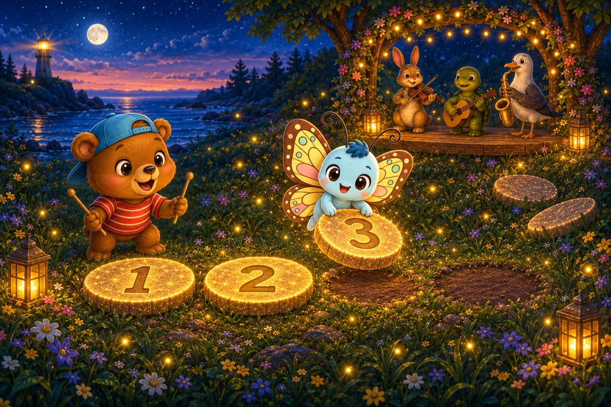
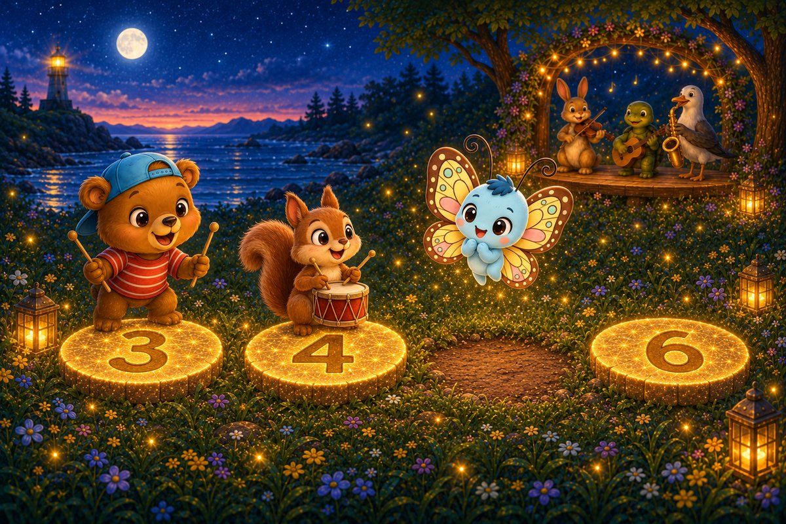
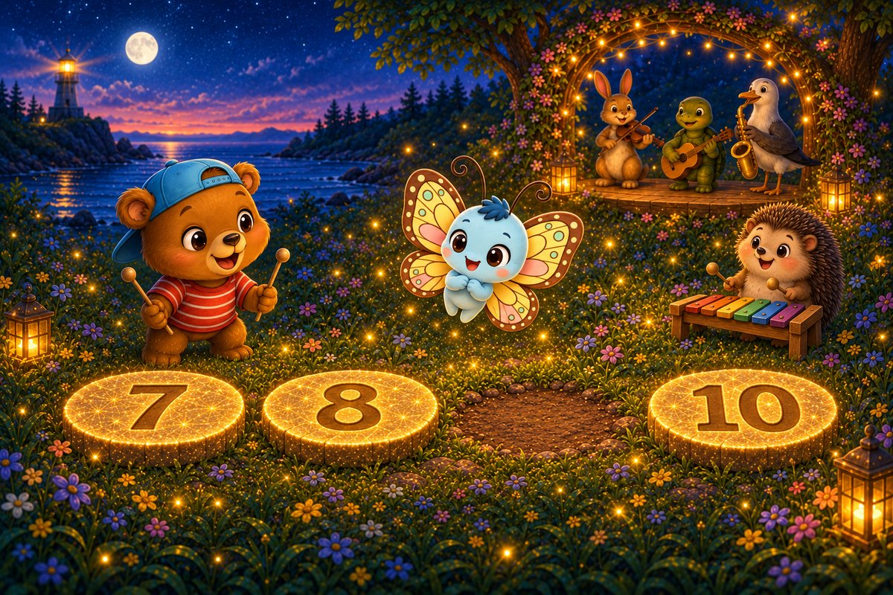
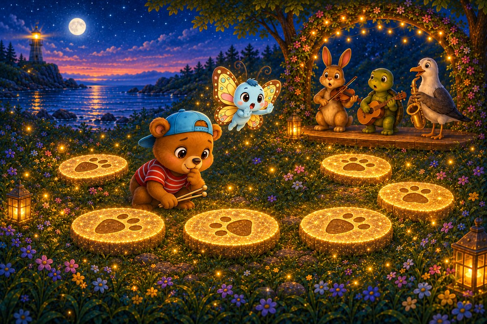
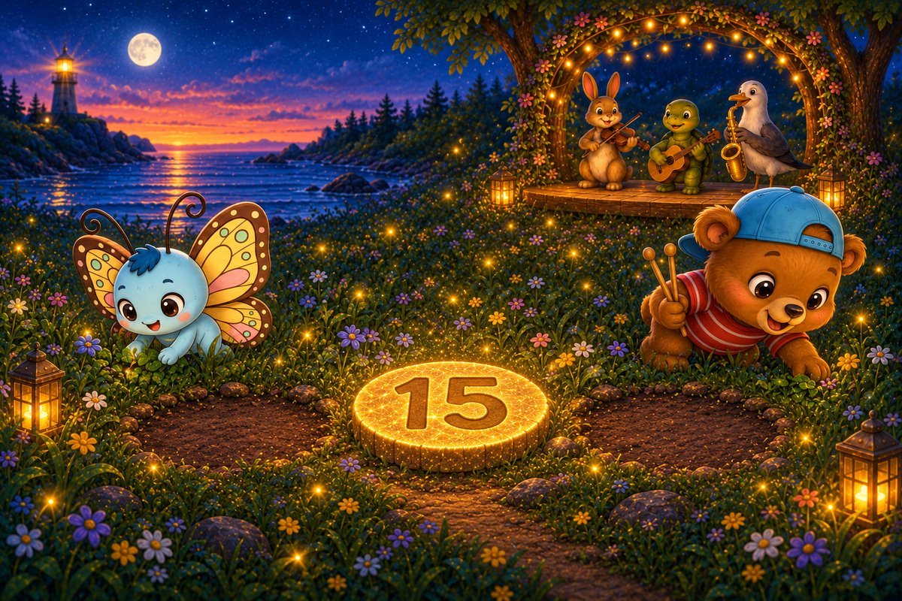
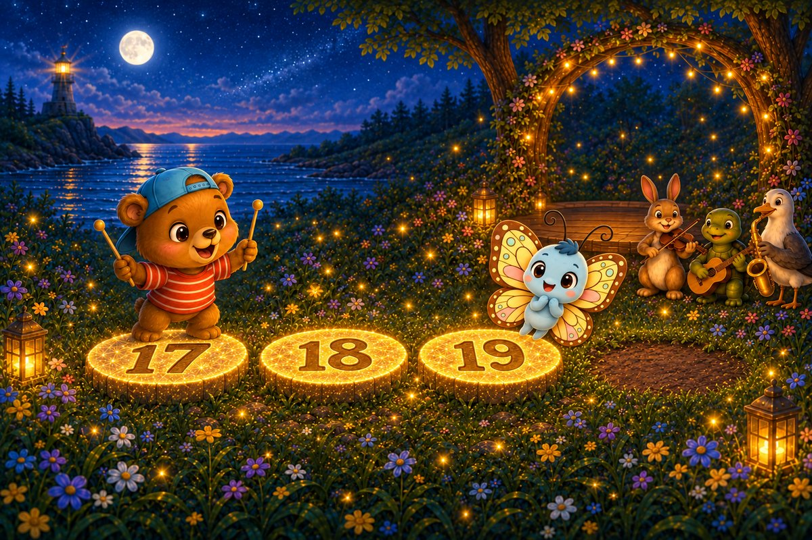

7 printed pages · 1.8 MB · A4 or US Letter. Download PDF · Open PDF to printOpens in a new tab. Use the PDF viewer's Print control. To use less ink, read online and choose only the questions on page 7 in Print.

Page 1 of 6 · The Broken Path
Honey-Beats reaches the concert meadow just as the musicians arrive, but the numbered stepping stones are scattered through the tall grass. Flutter-Butter lifts the first three back into a row while Honey taps a rhythm that should lead them to the next neighbour.
Try it: Which number comes after 3?
2
4
5
Show the answer
4. Four follows three.

Page 2 of 6 · A Gap by Six
The repaired path carries the first drummer forward, then stops at a gap beside the stone marked six. Honey-Beats taps a steady rhythm while Flutter-Butter counts backwards by one beat. The missing neighbour must return before the rest of the band can cross.
Try it: Which number comes before 6?
4
5
7
Show the answer
5. Five lives between four and six.

Page 3 of 6 · Between Eight and Ten
Near the flower arch, two numbered stones wait with an empty space between them. Flutter-Butter hovers over eight, then ten, while Honey-Beats listens for the beat the counting song has skipped. A xylophone player waits patiently on the bank.
Try it: Which number belongs between 8 and 10?
8
9
11
Show the answer
9. Nine is the neighbour between eight and ten.

Page 4 of 6 · The Twisted Stone
The musicians begin crossing again, but their path curls into a confusing loop. Its number neighbours are in the correct places, yet one stepping stone points differently from the rest. Honey-Beats studies the symbols while Flutter-Butter keeps the band from following the muddled direction.
Try it: Which stone is turned the wrong way?
The reversed stone
The first stone
The flower stone
Show the answer
The reversed stone. The reversed stone was interrupting the pattern.

Page 5 of 6 · Neighbours of Fifteen
At the final bend, the stone marked fifteen sits alone between two muddy spaces. Flutter-Butter searches for the neighbour that belongs before it, and Honey-Beats searches for the one after it. Both are needed to reconnect the path to the concert stage.
Try it: Which pair are the neighbours of 15?
13 and 14
14 and 16
16 and 17
Show the answer
14 and 16. Fourteen and sixteen are beside fifteen.

Page 6 of 6 · The Concert Path
The stage lights glow, but the last stepping-stone space is still empty after seventeen, eighteen, nineteen. Every musician waits together at the edge of the meadow. Honey-Beats begins a rising counting song, and Flutter-Butter listens for the number that will finish the path.
Try it: Which number finishes the path?
18
20
21
Show the answer
20. Twenty completes the concert path.
The end · Great counting
What are the neighbours of a number?
Talk about the answer
The number just before it and the number just after it. The neighbours of 15 are 14 and 16.
Every number found its neighbours, and every musician found the path. The meadow can sing again! SnackPack 123 Counting has more number stories, counting games and ten-frames.